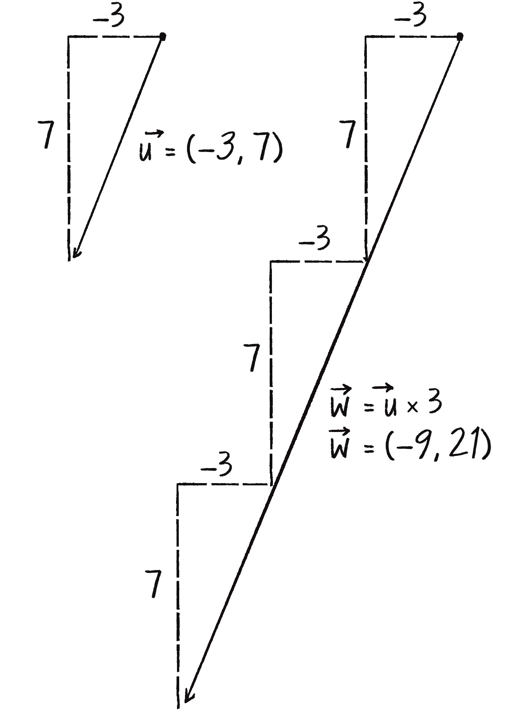
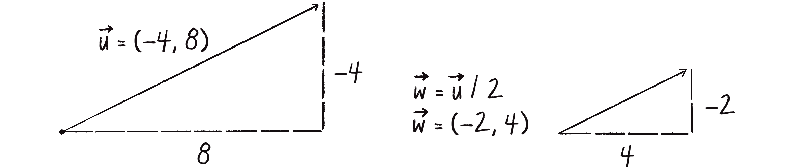

Vektörleri Ölçekleme (Vector Scaling)
Vektörleri bir skaler (tek sayı) ile çarparak veya bölerek büyütebilir veya küçültebiliriz. Bu, hız kontrolü için çok kullanışlıdır.

mult() - Çarpma (Multiplication)
let v = createVector(2, 3);
v.mult(2); // v = (4, 6) - 2 katı
v.mult(0.5); // v = (2, 3) - yarısı
v.mult(-1); // v = (-2, -3) - tersine çevirdiv() - Bölme (Division)

let v = createVector(10, 20);
v.div(2); // v = (5, 10) - yarısı
v.div(5); // v = (1, 2) - beşte biri💡 div() vs mult()
v.div(2) ve v.mult(0.5) aynı sonucu verir!
Hangisini kullanacağınız tercihe bağlı.
Örnek: Hız Kontrolü
mult() ve div() hızı kontrol etmek için mükemmel:
Kontroller:
velocity.mult(1.1) - Hızı %10 artırır
velocity.mult(0.9) - Hızı %10 azaltır
Statik Metodlar (Static Methods)
Bazen orijinal vektörü değiştirmek istemeyiz. Bunun için statik metodlar kullanırız:
let v = createVector(2, 3);
// ❌ Orijinali değiştirir
v.mult(2); // v artık (4, 6)
// ✅ Yeni vektör oluşturur, orijinal aynı kalır
let w = p5.Vector.mult(v, 2); // w = (4, 6), v hala (2, 3)| Metod | Kullanım | Orijinal |
|---|---|---|
v.mult(n) |
v'yi n ile çarp | Değişir ⚠️ |
p5.Vector.mult(v, n) |
Yeni vektör döner | Aynı kalır ✅ |
v.div(n) |
v'yi n'e böl | Değişir ⚠️ |
p5.Vector.div(v, n) |
Yeni vektör döner | Aynı kalır ✅ |
⚠️ Ne Zaman Statik Kullanmalı?
Kuvvetlerle çalışırken sıkça kullanacağız! Örneğin: aynı yerçekimi kuvvetini birden fazla nesneye uygularken, orijinal kuvvet vektörünü korumamız gerekir.
copy() - Vektör Kopyalama
Bazen bir vektörün kopyasını alıp üzerinde işlem yapmak isteriz:
let original = createVector(3, 4);
// ❌ YANLIŞ - aynı vektöre referans!
let copy1 = original;
copy1.mult(2); // original da değişir!
// ✅ DOĞRU - gerçek kopya
let copy2 = original.copy();
copy2.mult(2); // sadece copy2 değişir📝 Bu Bölümün Özeti
- v.mult(n): Vektörü n ile çarp (büyüt/küçült)
- v.div(n): Vektörü n'e böl
- p5.Vector.mult(v, n): Yeni vektör döner
- v.copy(): Vektörün kopyasını al
- mult(-1): Yönü tersine çevir
- mult(0.5): div(2) ile aynı